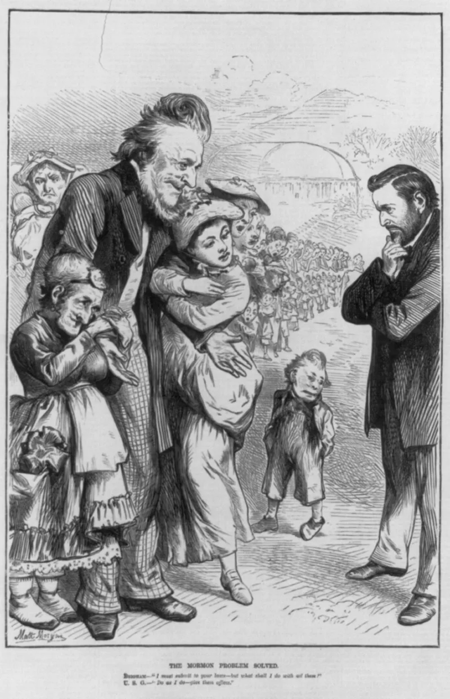
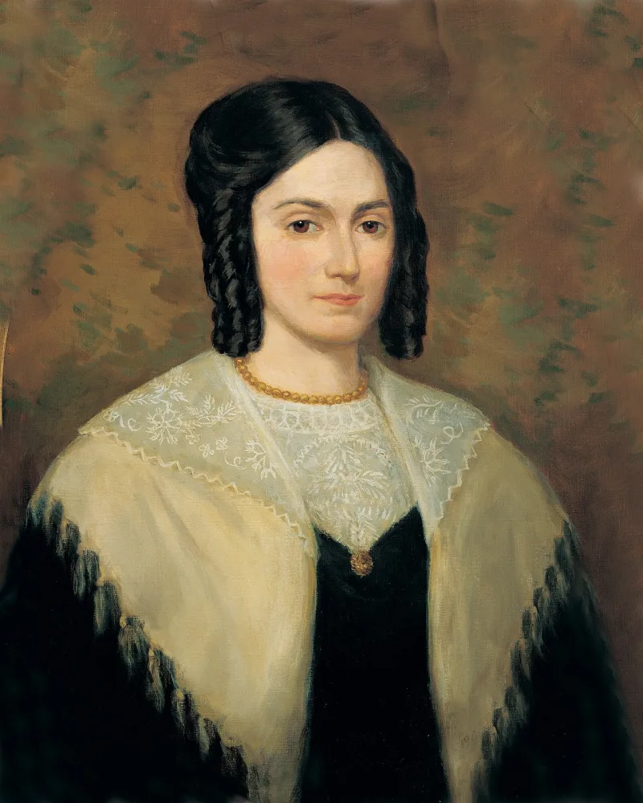

Joseph Smith's wives numbered 30 to 40, not 87
Don't useThe LDS answer holds up. Do not lead with this one.
The claim to stop making
That Joseph Smith had 87 wives. Or 50.
Or hundreds.
Why it is wrong
The documented count is about 30 to 40. Todd Compton documents 33.
The higher figures — Stanley Ivins once tallied 84 — pad the list with sealings nobody can verify, and with sealings performed after his death.
What it costs you
Say 87 and your friend corrects your arithmetic. Then they walk away from everything else you were going to say.
You handed them the exit.
What to use instead
Their own number. The Gospel Topics essay says "careful estimates put the number between 30 and 40," citing Brian Hales.
Add a bride aged 14, about a dozen women with living husbands, and years of public denials. Every clause of that is footnoted to the church's own website.
How strong is this argument?
Do not use it. Overclaiming is the one gift you can hand FAIR on this subject.
The admitted facts need no help from you.
What to say
"Thirty to forty. That's your church's number, on your church's website."



How they answer this — at its strongest
The documented count is 30 to 40, and the higher tallies pad the list.
The documented count is about 30 to 40, and that number is the church's own. The Gospel Topics essay says 'careful estimates put the number between 30 and 40', citing Brian Hales. Todd Compton documents 33.
Higher figures pad the list. Stanley Ivins once tallied 84, using sealings that cannot be verified and sealings performed after Smith's death.
Claiming 87 lets an apologist correct your arithmetic and walk away from the substance.
The verdict
Do not use this: overclaiming is the one gift you can hand FAIR.
Overclaiming is the one gift you can give FAIR on this topic. The church-admitted facts need no inflation.
Thirty to forty wives. One aged 14: Helen Mar Kimball, 'sealed months before her 15th birthday', in the essay's own words. Roughly a dozen already married to living husbands. And public denials throughout.
Every clause is sourced to the church's own essay, and covered by this site's other polygamy cases. Say 'thirty to forty, that's your church's number', and nothing can be rebutted.
Sources
- Gospel Topics essay: 'Plural Marriage in Kirtland and Nauvoo'
- Wikipedia: List of Joseph Smith's wives
- LDS Discussions: Polygamy and Polyandry in Nauvoo